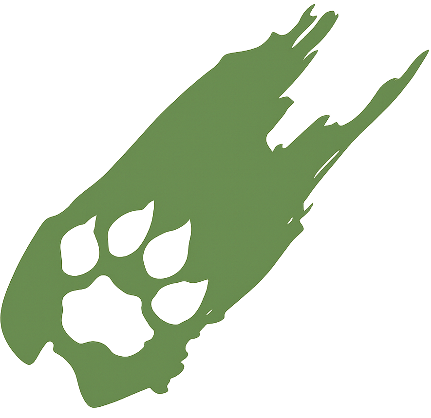

¿Quiénes somos?
Somos un corporativo multidisciplinario con amplia experiencia en diversos rubros en materia de medio ambiente: derecho ambiental, recursos naturales, cambio climático, energías renovables, ecoeficiencia, salud, seguridad e higiene, auditoría ambiental, sistemas de gestión ambiental, protección civil, comunicaciones y transportes, agricultura sustentable, etc., ante diversas instancias Federales, Estatales y Municipales.
Directora General Mtra. Mónica Mariela Reyes Garrido
Lic. en Química, cuenta con un Máster En Energías Renovables y Sostenibilidad Energética por la UNIBA, una Maestría en Administración con especialidad en Calidad y Productividad, Diplomado en Tecnología y Administración Ambiental por parte del Instituto Tecnológico y de Estudios Superiores de Monterrey. Cuenta con amplia trayectoria y experiencia en materia ambiental al desempeñarse como Especialista en Hidráulica en la Comisión Nacional del Agua, Subdelegada de Verificación Industrial y Subdelegada de Dictaminación en PROFEPA, Directora General de Protección Ambiental y Directora General de Planeación Ambiental en la SEMADES. Actualmente profesora de asignatura de la Universidad Panamericana Campus Guadalajara. Ha participado en visitas de carácter ambiental en Alemania, España, Brasil, Japón y EUA.
Socio Fundador J. Ernesto Naranjo Castellanos
Abogado por la Universidad de Guadalajara, cuenta con Diplomado en Auditorías Ambientales, ha participado en diversos foros de análisis y actualización del marco legal ambiental, como ponente en diplomados y cursos en diversos temas ambientales. En el ámbito laboral, se ha desempeñado como Subdelegado Jurídico y Subdelegado de Inspección y Vigilancia de la PROFEPA, Director General de Verificación Normativa de la SEMADES, Director General de Vigilancia y Control de la PROEPA, Director General de Planeación y Vinculación Ambiental y Director General de Protección Ambiental de la SEMADES, Director de Aseo Público en Zapopan y Director de Ecología en el Ayuntamiento de Tlajomulco de Zúñiga. Ha participado en visitas de carácter ambiental a Alemania, Canadá y Corea.
 Email
Email
 WhatsApp
WhatsApp
 Google Maps
Google Maps
 Instagram
Instagram